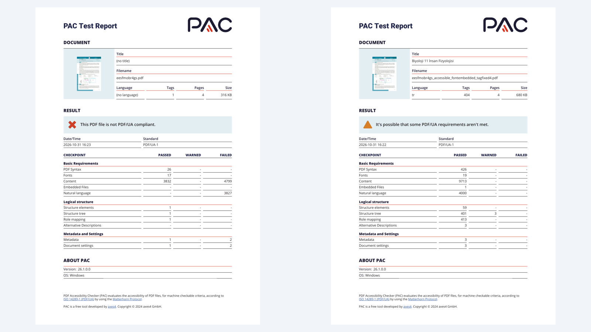

What you see when you look at a PDF is not what a screen reader “sees”. In this post I describe what I did to make a Biology 11 “Immune System” worksheet accessible, the before-and-after difference in the PAC reports, and why the one warning left in the final report is a deliberate choice.
About the document
A four-page course worksheet prepared by the Ministry of National Education’s General Directorate of Secondary Education. It contains headings, instructions, two tables, multiple-choice questions, a diagram of innate and acquired immunity, and a chart of antibody levels over time. It has almost every hard element for accessibility, which makes it a good test document.
Before: fine to look at, no structure
When I checked the original file with PAC 2024 against PDF/UA-1, the result was clear: “This PDF file is not PDF/UA compliant.”
An untagged PDF is like a book made of photographed pages, with no table of contents, no section headings and no page numbers. A screen reader will read the text somehow, but it does not know which part is a heading, which is a table cell and which is decoration, and it has to guess the reading order. For a blind student that is like walking through a city without a map.
The missing language is a separate problem. No language was set in the document, so the “Natural language” check reported 3,827 errors. A screen reader may then read the Turkish text with the pronunciation rules of the wrong language.

What I changed
- Title and language: the document title is “Biyoloji 11 İnsan Fizyolojisi” and the document language is Turkish (tr).
- Tagging: headings, paragraphs, lists and tables got proper tags. The tag count went from 1 to 404.
- Decoration: elements that carry no information were marked as artifacts, so the screen reader skips them.
- Tables: header cells were defined, and the empty answer cells that students fill in were associated with their headers.
- Images: the diagram and the chart were tagged as Figure and given alternative text (details below).
After: the PAC report
| Check | Original | Accessible version |
|---|---|---|
| Number of tags | 1 | 404 |
| Document title and language | None | Set (tr) |
| Content, errors | 4,799 | 0 |
| Natural language, errors | 3,827 | 0 |
| Metadata, errors | 2 | 0 |
| Document settings, errors | 2 | 0 |
| Alternative Descriptions, passed | 0 | 3 |
| Structure tree, warnings | 0 | 3 |
| File size | 316 KB | 680 KB |
The errors column is completely empty. The file doubling in size is normal: the structure tree, the tags and the embedded fonts add data to the file.
The triangle that is left: a warning, not an error
The result box for the accessible version says: “It’s possible that some PDF/UA requirements aren’t met.” That comes from the 3 warnings under Structure tree. In PAC, an error (failed) is a definite violation of a rule; a warning (warned) is something the tool cannot decide by machine and a person has to judge.
These warnings come from my tagging some of the charts and diagrams as Figure. I did that on purpose, because it was the most efficient way to prepare those elements for a screen reader.
Why Figure and alt text?
Consider the alternative. If I tag every piece of text inside the chart (“Antibodies formed against the antigen”, “Week”, “10”, “100”) separately, a screen reader reads them piece by piece, without knowing what the chart means. It is like cutting a picture into strips and describing each strip on its own. Tagged as a Figure with well-written alt text, the reader says “chart” and delivers the image as one meaningful whole.
How to write the alt text: the antibody chart
Zamana bağlı kandaki antikor düzeyi grafiği. Yatay eksen hafta, dikey eksen kandaki antikor düzeyi (10, 100, 1000). Antijenle ilk karşılaşmadan sonra yaklaşık 2.-3. haftada antikor düzeyi 10 civarına çıkıp düşer (birincil yanıt). Aynı antijenle tekrar karşılaşıldığında düzey çok daha hızlı yükselir, 1000’in üzerine çıkıp yavaşça azalır (ikincil yanıt, hafıza hücreleri). 11. haftada başka bir antijenle ilk karşılaşmada düzey yine 10 civarına çıkar.
This is the Turkish alt text as it appears in the document. In English it reads: a chart of antibody level in the blood over time; horizontal axis in weeks, vertical axis antibody level (10, 100, 1000). After first contact with an antigen, the level rises to about 10 around weeks 2 to 3, then falls (primary response). On meeting the same antigen again, the level rises much faster, passes 1000 and declines slowly (secondary response, memory cells). On first contact with a different antigen in week 11, the level again rises to about 10.
The principle: describe what the chart shows and what it leads to, not every line in it.
When the diagram is an activity
The diagram of innate and acquired immunity is a different case, because it is an activity: students are asked to place 11 terms, A to İ, in the circles on the diagram (external defence, internal defence, acquired immunity). If the alt text only describes the structure of the diagram, a blind student cannot do the activity. So the alt text should name the regions and the number of circles (4, 5 and 2), and where needed you should offer an equivalent text alternative, for example a matching list that sorts the terms into three groups.
Should the warning stay?
I think it should. A warning is not a defect; it is a note saying “a person should judge this element”, and as the author of the alt text I made that judgement. The Figure and alt text approach does not conflict with PDF/UA-1 either.
Passing PAC does not mean being accessible
PAC only looks at criteria a machine can check. It cannot tell you:
- whether the alt text is actually correct and useful
- whether the reading order makes sense
- whether the heading hierarchy is meaningful
So the last step should always be to listen to the whole document with a screen reader (NVDA, VoiceOver) and to run the manual checks from the Matterhorn Protocol.
Summary
- Original: 1 tag, no title or language, thousands of errors.
- Accessible version: 404 tags, title and language set, zero errors.
- The 3 remaining warnings come from the Figure and alt text choice and are a deliberate decision.
- Automated checking is a starting point; the real test is a real screen reader.
The source document is a Ministry of National Education, General Directorate of Secondary Education material, used here only to show the accessibility work.